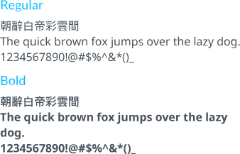

Typography
Fonts
Lato

- Primary use is for body, navigation, UI microcopy
- Not used for headlines but is a fall back if another fonts can't be loaded.
- In HTML/CSS, use – font-family: "Lato”, Arial, sans-serif;
Open Sans

- Used in H2.
- Not used for headlines.
- In HTML/CSS, use – font-family: "open sans”, Arial, sans-serif;
Noto Sans

- Not used for headlines.
- Primary use is for chinese.
- In HTML/CSS, use – font-family: "Noto sans”, "SimHei”, “Microsoft JhengHei”.
SimHei
- Not used for headlines.
- Primary use is for chinese.
- In HTML/CSS, use – font-family: "Noto sans”, "SimHei”, “Microsoft JhengHei”.
Microsoft JhengHei

- Not used for headlines.
- Primary use is for chinese.
- In HTML/CSS, use – font-family: "Noto sans”, "SimHei”, “Microsoft JhengHei”.
Web style
-
Headline
3em/5em
-
Sub-headline
2.2em/4em
-
H1
2em/3em
-
H2
1.8em/2.5em
-
H3
1.5em/2em
-
Oversize paragraph
1em/2em
-
Regular Paragraph
1em/2em